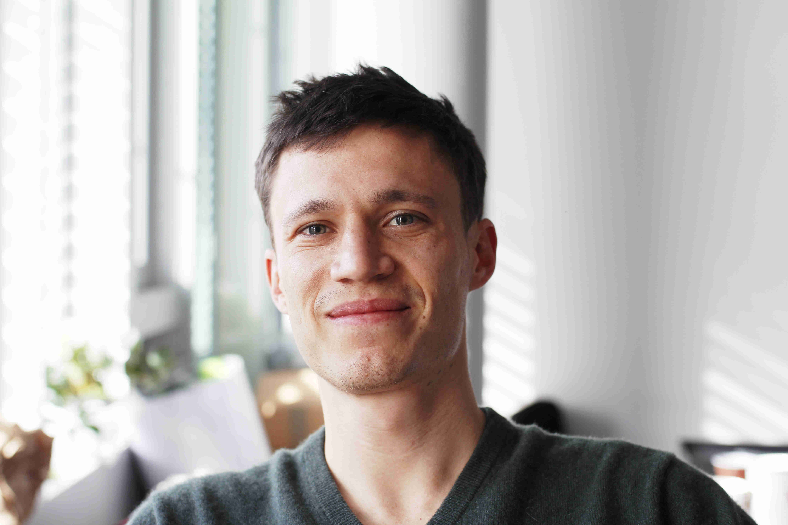

Miha Brešar
Assistant Professor
School of Data Science
CUHK-Shenzhen
Probability, applied probability, machine learning for finance, and AI for mathematics.
Academic profileA proposed one-day conference at CUHK-Shenzhen on AI for mathematical reasoning, proof, and discovery.
The conference explores three themes: AI for Mathematical Reasoning, Formalizing Mathematics with Lean, and Mathematics in the Age of AI. The morning focuses on industrial AI research and Lean; the afternoon explores mathematical research harnesses, discovery, opportunities in physics, and evolving research practices.
We are interested in the whole research process: finding a useful question, experimenting with ideas, developing an argument, checking the result, and understanding where an approach fails.
The event contact address will be announced here.
For event enquiries: cosmelouart@cuhk.edu.cn.
Assistant Professor
School of Data Science
CUHK-Shenzhen
Probability, applied probability, machine learning for finance, and AI for mathematics.
Academic profileCo-founder & Chief Scientist
AI startup in Shenzhen
PhD, CUHK-Shenzhen
Machine learning for combinatorial optimisation, reinforcement learning, and LLMs for mathematics.
Academic profile
Assistant Professor
School of Data Science
CUHK-Shenzhen
Random matrix theory, concentration of measure, and high-dimensional machine learning.
Academic profilePortrait sources: academic homepages and an image supplied by the organiser. Photo credits.
The June workshop brought together talks on mathematical reasoning and research agents, discussion of the open-problem database, and mathematical problem presentations.
Visit the June event archive